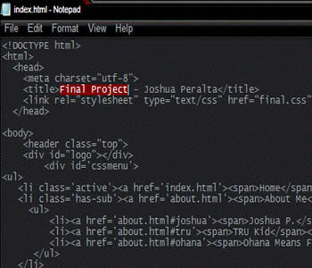

Welcome
Welcome to Joshua Peralta's Final Project Website! Here you will see most of the new things I learned from High School and College; regarding Web Design. In this site you'll find interesting information about me such as who am I, my projects and project ideas, and my Christian life. For more information, check the tabs in the site. For even further information, feel free to ask me directly by Contacting me at any time.
Web Development
Here at Valencia College, I took the AS Digital Media-Web Developer Major so I could become a better Web Designer. Creating websites has been one of my favorite’s hobbies, therefore I knew this was something I would like to do.
In the second semester I took the Web Development class online to increase my skills to what I already learned in High School's Web Design class. After starting the class and reading the Head First HTML and CSS book, I knew this was going to be an awesome class. The book and the class were perfect for starting out as a new Web Designer in the making. Everything was simple and easy, but attention was something highly required which I learned the hard way after a few failures. In the blink of an eye, semester is over and I could tell that I have learned a lot out of this class. Now I have to go even further to hone my skills to the fullest.
Final Project

This Final Project is made to test my learning’s throughout the semester in the Web Development class. I have to show all the basic skills and advanced skills to the best of my efforts. We all know that the simple final project I did in High School was not going to make it. I have to make this look more professional-like if I want to pass this class. Like always, is best to make different ideas on how to make the website before putting it into action, but none of them came to my appealing. As time ran faster, I ran out of ideas. In the end, I went for a dark looking theme, I thought of a good color palette to use, and then it was all on the style. Since I finally learned how to make layouts thanks to this class, this was a lot easier than in high school. (Not really).